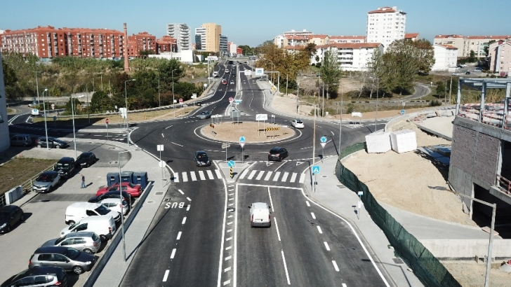

Áreas verdes dedicadas à vegetação, construção do espaço urbano voltado para o pedestre, assim como vem sendo
modelo em muitos países da europa, liberando mais espaço para o verde.

Mais áreas verdes
Uma das principais soluções para reduzir o efeito das ilhas de calor é aumentar a
quantidade de áreas verdes no bairro.
Árvores, jardins e praças ajudam a diminuir a temperatura porque fornecem sombra e
liberam umidade para o ambiente através da evapotranspiração, tornando o ar mais fresco e agradável.
A presença de áreas verdes também traz outros benefícios importantes:
Redução do consumo de energia elétrica;
Melhoria da qualidade do ar;
Diminuição da poluição sonora;
Aumento do bem-estar físico e mental da população;
Espaço voltado a pedestres
Cidades que priorizam os pedestres em vez do excesso de veículos conseguem liberar mais
espaço para parques, ciclovias e arborização.
Esse modelo já é utilizado em diversos países da Europa, onde ruas com menos carros e
mais vegetação proporcionam melhor qualidade de vida para os moradores.